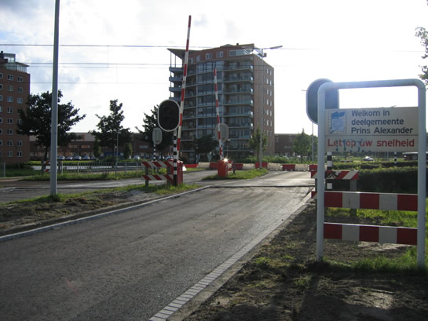

Ontwikkelingen proefbedrijf Nesselandelijn en meer...
- maandag 08 december 2008 08:35
- Geschreven door Simon
n de afgelopen dagen is er proefgereden op de Nesselandelijn, de uitbreiding van de sneltramtak van Zevenkamp naar de nieuwbouwwijk Nesselande. Enkele malen moest de bovenleiding worden hersteld, waardoor er weer slechts tot De Tochten werd gereden. In de afgelopen dagen werd er soms niet, soms af en toe proefgereden. En gisteren slechts via één spoor op de nieuwe lijn, over spoor 1.
Proefbedrijf op woensdag 20 juli 2005: alleen spoor 1 werd gebruikt.
Foto genomen over een hek; pantografen zijn al neergelaten, metro rijdt over spoor 1 naar Nesselande (linkerspoorbedrijf in deze richting).
Deze wagendienst heeft net gehalteerd op De Tochten en vervolgt met passagiers zijn weg naar Schiedam Centrum.
Wagendienst 554 richting Nesselande over spoor 1.
En weer terug, enkele minuten later.

Passagiers mogen weer instappen, de achterste richtingfilm staat eigenlijk verkeerd.
Een enkele wagendienst reed al met de richtingfilm "Nesselande".
Wisselstoring
Als gevolg van een wisselstoring reden er vanmorgen vroeg geen metro's tussen de stations Poortugaal en Hoogvliet op de Erasmuslijn, tussen De Akkers en Heemraadlaan op beide lijnen, en tussen Marconiplein en Tussenwater op de Calandlijn. De storing ontstond rond kwart voor zes vanmorgen. Er reed een pendelmetro tussen Heemraadlaan en Hoogvliet. Tussen Hoogvliet en Poortugaal reden twee pendelbussen, in Schiedam was geen vervangend vervoer; bestaande tram- en buslijnen vingen de gestrande reizigers op.
Wegwerkzaamheden Prins Alexanderpolder
Er wordt alweer enige tijd gewerkt aan het asfalt van diverse belangrijke wegen in de Prins Alexanderpolder. Het asfalt wordt bijvoorbeeld vervangen op de Prins Alexanderlaan, tussen de 's Gravenweg en de Prins Alexanderpolder zelf. Het metroverkeer en het langzame verkeer ondervindt hieraan geen hinder. De AHOB-installatie blijft volledig in werking, ook al passeert er hier de komende tijd geen enkele auto. Daarnaast is het veiliger voor de wegwerkers.

De situatie bij de kruising Prins Alexanderlaan; met water gevulde rood-witte bakken blokkeren voor snel verkeer de kruising.
Aanpassing verkeerslichtinstallaties
Daarnaast vinden er ook nog eens aanpassingen plaats aan de verkeerslichtinstallaties in de Prins Alexanderpolder. Zo worden onder andere de kruisingen Hoofdweg en President Rooseveltweg aangepast, de eerste is verouderd. Er komen LED-lichten in de verkeerslichten voor snel- en langzaam verkeer, want die hebben een langere levensduur. Diverse kruisingen zijn al voorzien van deze nieuwe LED-lichten. Ook wordt de doorstroming van het verkeer verbeterd, met name bij de sneltrampassages. Tijdens de werkzaamheden werken de verkeerslichten niet, de AHOB-installaties van de sneltram blijven echter wel functioneren. Op de kruisingen Hoofdweg en President Rooseveltweg zullen de komende tijd regelmatig verkeersagenten te zien zijn, die het snelle verkeer stoppen. Deze kruisingen zijn niet van AHOB's voorzien voor het snelle verkeer. Zie ook de AHOB-projectpagina. De werkzaamheden vinden plaats tussen 23 juli en 7 augustus, er zijn echter al voorbereidende maatregelen getroffen. Autoverkeer moet in deze periode extra rekening houden met slechtere doorstroming. Omleidingen zijn echter niet nodig.
Kruising Hoofdweg:er worden extra kabels aangelegd voor de aanpassing van de verkeerslichtinstallatie, alle verkeer moet extra op de barriéres letten bij het oversteken.
De kruising kenmerkt zich de komende weken door hopen zand en afgezette rijstroken.